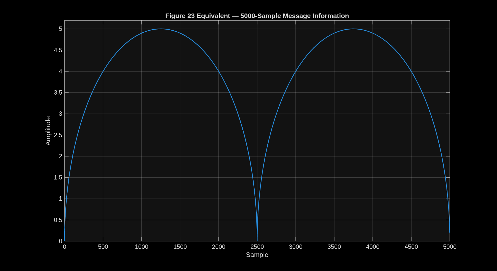
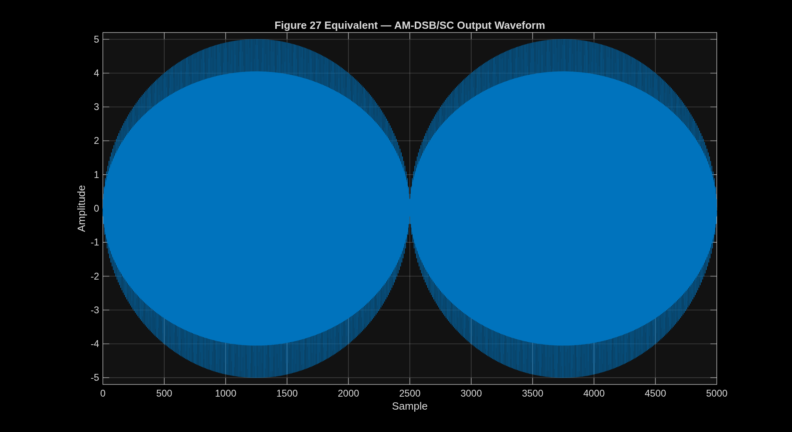
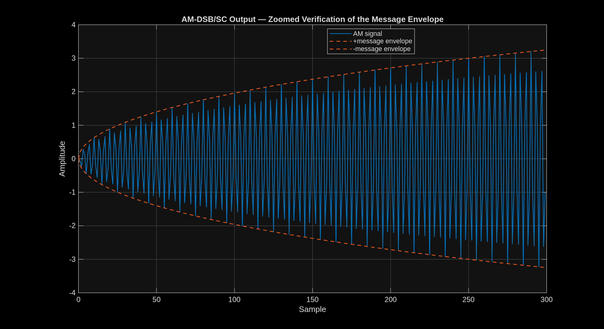
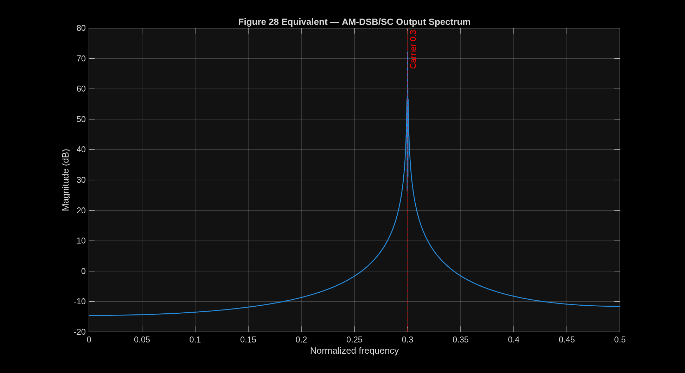
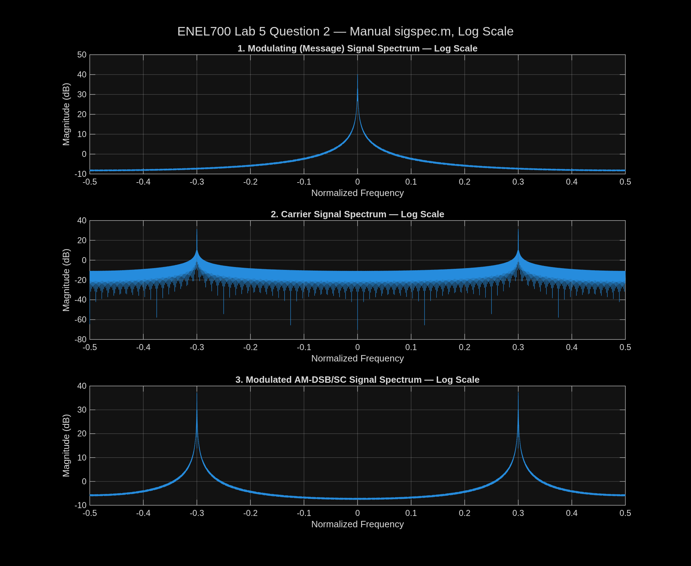
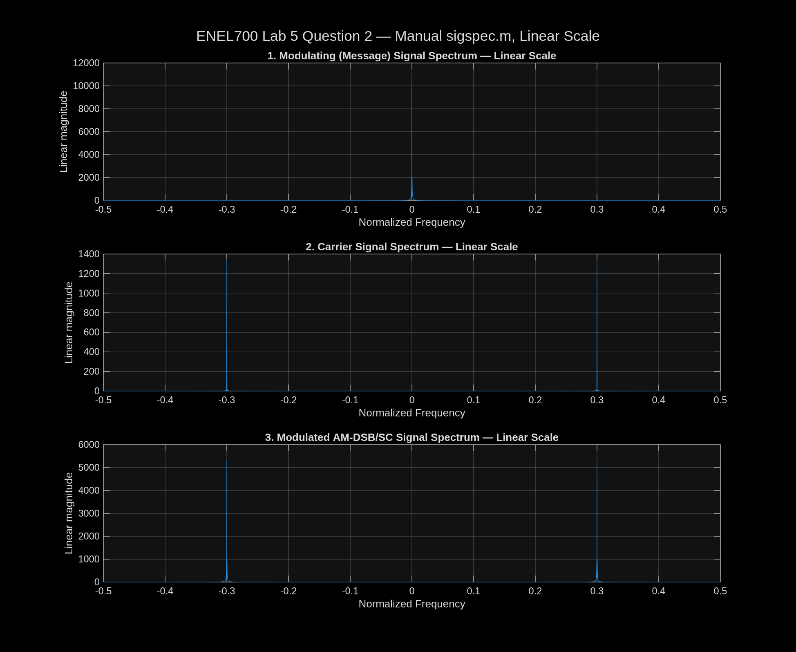

Return to Communication Engineering Overview · Lab instructions: Lab 5 working note · Source: ENEL700 Lab Book 2026, pages 30–38 · Accessible text: ENEL700-Lab-5-Full-Transcription
This work replicated the signal processing and output figures from ENEL700 Lab 5, Amplitude Modulation Using Simulink. The supplied laboratory procedure defines a 5,000-sample two-arch message signal, a unit-amplitude carrier at normalized frequency 0.3, and an AM double-sideband suppressed-carrier (AM-DSB/SC) signal formed by multiplication. Headless Simulink initialization did not complete within bounded safety limits, so the same signals were generated and analysed directly in MATLAB. The resulting message waveform, modulated waveform, output spectrum, and three stacked spectra matched the forms shown in manual Figures 23, 27, 28, and 29. The measured modulated-sideband/message peak ratio was 0.4984, corresponding to −3.0245 dB under the manual's 10*log10 convention, in close agreement with the expected 0.5 and −3 dB.
The purpose of Lab 5 is to become familiar with MATLAB and Simulink through an amplitude-modulation example. The practical objectives are to:
sigspec.m spectrum function;sigspec.m and subplot to compare the message, carrier, and modulated spectra;Manual pages 30–38 were rendered and visually transcribed page-by-page because the Lab 5 section of the PDF is image-based and does not contain searchable text. The complete accessible transcription is stored in ENEL700-Lab-5-Full-Transcription. It confirms that Question 2 depends on both the initial model setup and Question 1's supplied spectrum function.
The relevant sequence is:
bumps in MATLAB.2*pi*0.3, phase pi/2, and sample time 1.am.sigspec.m function using a Hamming window, zero-padded FFT, fftshift, and normalized frequency from −0.5 to 0.5.sigspec.m function in three subplot axes.For discrete sample index (n), the carrier used by the manual is
c[n] = \sin(2\pi(0.3)n + \pi/2).
The message is the two-arch sequence
bump = sqrt(1250^2-([0:2499]-1250).^2) / 250;
bumps = [bump bump];
The AM-DSB/SC output is
s[n] = m[n]c[n].
Multiplication by a sinusoidal carrier shifts the baseband message spectrum to positive and negative carrier frequencies. Since
\cos(2\pi f_c n) = \frac{1}{2}e^{j2\pi f_c n}+\frac{1}{2}e^{-j2\pi f_c n},
each shifted copy has one-half of the original linear spectral magnitude. With the laboratory function's 10*log10 magnitude convention,
10\log_{10}(0.5) \approx -3.01\text{ dB}.
The direct MATLAB replication used the same parameters as the manual:
message .* carrier.The output spectrum equivalent used the manual's Blackman-window and 20*log10 procedure with NFFT = 2^16.
sigspec.mThe completed sigspec follows the supplied Question 1 processing sequence:
2^(ceil(log2(len))+2);fftshift;[-0.5, 0.5);flag=0;10*log10 magnitude for flag=1.The manual starter labels the y-axis “Magnitude (dB)” even for the linear branch. The completed function corrects only that label: the linear branch is labelled “Linear magnitude.” The numerical algorithm remains the manual's method.
The generated message contains exactly 5,000 finite real samples. It forms two arches, rises to amplitude 5, and returns close to zero at the midpoint and end.

The full output shows rapid carrier oscillation bounded by the two-arch envelope, with maximum absolute amplitude 5. This matches the expected output of multiplying the message by a unit-amplitude carrier.

The zoomed result makes the carrier oscillations and positive/negative message envelope easier to inspect.

The dominant positive-frequency spectral peak was measured at normalized frequency 0.300003051758, matching the configured carrier frequency of 0.3.

The supplied starter code was completed as sigspec. The function successfully produced centred linear and logarithmic spectra for vectors supplied as either rows or columns. Optional frequency and spectrum outputs were retained for numerical verification; calling the function without outputs still performs the required plot.
Question 2 requires three signals in the same figure window but in separate subplot axes:


The Hamming-windowed, zero-padded spectra produced:
0.498366330964;0.5;−3.02451305776 dB;−3.01 dB;0.299987792969.The small difference from exactly 0.5 is consistent with finite-length sampling, windowing, and FFT-bin placement. The result supports the expected AM-DSB/SC scaling.
| Manual requirement | MATLAB replication result | Status |
|---|---|---|
| 5,000-sample two-arch message | 5,000 samples, amplitude 0–5 | Pass |
| Unit-amplitude carrier at normalized frequency 0.3 | Peak measured at 0.299988/0.300003 depending on FFT method | Pass |
| AM waveform follows message envelope | Full and zoomed plots visually verified | Pass |
| Output spectrum shifted to 0.3 | Dominant peak at 0.300003 | Pass |
Question 1 uses Hamming, zero-padding, fftshift |
Completed sigspec.m uses the supplied sequence |
Pass |
| Three stacked spectra | Message, carrier, and modulated spectra produced | Pass |
| Modulated spectrum is half the message magnitude | Ratio 0.498366 | Pass |
| Log difference is about −3 dB | −3.0245 dB | Pass |
The signal processing and required output figures are certified, but the current work is a MATLAB signal-domain replication rather than an executed Simulink block model. MATLAB itself works normally and reports a valid Simulink licence; however, headless load_system('simulink') did not return within a 30-second safety limit, and a minimal model attempt did not return within 60 seconds. Both were terminated automatically to avoid leaving an unattended prompt or process.
To complete the procedure exactly as written in the manual, Aaron would need to help at Tornado with the GUI-dependent stage:
lab5.slx with the exact parameters recorded in ENEL700-Lab-5-Full-Transcription.This handoff would certify the Simulink GUI implementation itself. The present report already certifies the underlying signal definitions, spectrum function, expected figures, and Question 2 scaling.
.slx model was not produced because unattended Simulink initialization stalled.20*log10 for Figure 28 but 10*log10 in the Question 1 sigspec starter. This report preserves both conventions in their respective contexts rather than silently treating them as identical.The MATLAB replication successfully reproduced the central results of ENEL700 Lab 5. The two-arch message, AM-DSB/SC waveform, carrier-frequency shift, completed spectrum function, and three stacked Question 2 spectra all matched the laboratory instructions. Numerical verification measured the carrier at approximately 0.3 and the sideband scaling at 0.4984 or −3.0245 dB, agreeing closely with theory. The remaining work for a fully literal completion is a supervised Simulink GUI run and capture of the actual block-model and Scope evidence.